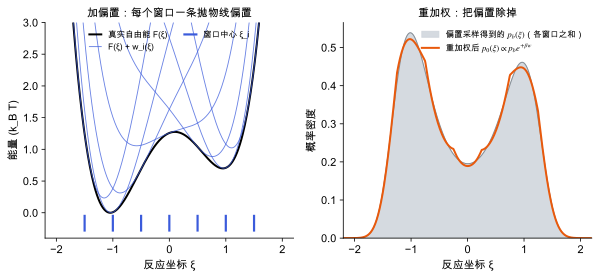

增强采样与重加权
体系的自由能面有高垒时，普通 MD 在有限时间里采不到垒两边，算出来的自由能是错的；这一条讲怎样用偏置把采样推过垒，再怎样把偏置的影响严格地除掉，恢复无偏的自由能。
只是提示，不需要先读完才能往下看。
直觉直观解释
自由能是概率的负对数（见 自由能与熵）：
其中 \xi 是你关心的一两个慢变量（反应坐标、扭转角、配位数、晶胞参数），p(\xi) 是平衡时体系处于 \xi 附近的概率。
在有限长度的 MD 里，体系在垒的一侧停留的时间远多于跨越垒的时间，p(\xi) 在高垒区根本采不到。而自由能垒恰好由垒顶那一小段概率决定，所以漏采样的区域不是“精度差一点”，而是数值完全不可信。
增强采样的思路是：在 \xi 上加一个已知的偏置势，把采样从最低点“抬”出来，让体系愿意访问垒顶和别的盆地；采完之后，再用偏置的解析形式把它除掉。图里左边是加偏置，右边是除掉偏置。

| 符号 | 是什么 | 图里对应哪部分 |
|---|---|---|
| \xi | 反应坐标（慢变量） | 横轴 |
| F(\xi) | 无偏自由能 | 左图黑色粗线 |
| w_i(\xi) | 第 i 个窗口的偏置势 | 左图细蓝抛物线 |
| \xi_i | 窗口中心 | 左图坐标轴下方的蓝色短竖线 |
| p_b(\xi) | 偏置下采到的（有偏）概率密度 | 右图灰色填充 |
| p_0(\xi) | 无偏概率密度 | 右图橙色曲线 |
图中右面板的 p_0 与左面板的 F 互为负对数——这正是重加权要做的事：把“在有偏分布下采到的样本”换算回“无偏分布下的概率”。
定义与公式数学与推导
偏置采样与重加权恒等式
Z 一般很难直接算（它等价于两套势之间的自由能差，形式上是一个 Zwanzig 微扰 [Zwanzig 1954]）。伞形采样 (umbrella sampling) 的做法是把它拆成许多互相重叠的窗口 [Torrie & Valleau 1977]：每个窗口里偏置相对平缓，Z 的估计在窗口内稳定，再用重叠区把相邻窗口拼接起来。
从直方图拼接到 MBAR
最早的拼接方法是 WHAM（weighted histogram analysis method）[Kumar et al. 1992]：把各窗口的直方图用自洽方程联立，解出每个窗口的常数 f_i。
MBAR（multistate Bennett acceptance ratio）[Shirts & Chodera 2008] 不再先做直方图，而是直接对每个样本加权。设第 i 个窗口的样本来自偏置势 U_i，则
其中 N 是所有窗口样本总数；N_k 是第 k 个窗口的样本数；\hat{f}_k 是待解的窗口自由能常数；U_k(x_n) 是样本 x_n 在第 k 个偏置势下的能量。这是一个自洽方程组，迭代求解。
这句话的实用含义：窗口重叠不好、样本量不均时，WHAM 的直方图分箱会丢掉信息，MBAR 更稳。代价是 MBAR 要保存全部样本的能量（或者能量矩阵），内存与计算量随样本数增长。
元动力学：偏置不是预设的
伞形采样的偏置是一组事先固定的抛物线，窗口中心要自己选、要保证重叠。元动力学 (metadynamics) [Laio & Parrinello 2002] 换一种做法：一边跑一边往已经访问过的地方“填高斯”，让体系自己离开盆地：
其中 W 是每次填的高斯高度；\sigma 是高斯宽度；\xi(t') 是第 t' 步时体系所在的 \xi 位置。填满了的地方偏置就高，体系自然去没填过的地方。
在本研究线里的样子对应与边界
用机器学习势做增强采样
MLIP 使能跑几纳秒到微秒的 MD（见 机器学习势、分子动力学），垒的跨越变得可行，但对慢变量来说仍然不够。常见组合：
- 用 MLIP 跑偏置 MD，得到 p_b(\xi)；
- 用同一偏置解析地重加权，得到 F(\xi)；
- 在关键点上用 DFT 单点校正绝对能量，检查 MLIP 的系统偏差（见 基准与验证）。
这条路线的工作量主要在验证：MLIP 在垒顶、在高能构象上是否仍然准，决定了 F(\xi) 的垒高是否可信，而不是采样够不够。微调过的势在远离平衡处失效的风险最大（见 通用机器学习势的微调）。
与结构搜索的关系
多晶型之间的自由能差、构象异构体的能量差，都能用同样的重加权思路从 MD 里得到（见 能量景观与多晶型、晶体结构预测：搜索与排序）。相对静态 0 K 能量排序，这一步补上了振动与构象熵的贡献。
常见坑对应与边界
- 窗口重叠不足：相邻窗口的采样区间不重叠，拼接时 Z 被外推，结果在缝隙处出现虚假的台阶。
- 慢变量选错：\xi 不能区分两个真正不同的盆地（例如没包含关键的扭转角），体系在 \xi 固定时仍在别的方向上来回跳，重加权后的 F(\xi) 是两套分布混在一起的平均，没有意义。
- 认为“跑了偏置就等于采到了”：偏置只保证在 \xi 方向上有样本，垂直方向仍可能没松弛。
- 元动力学的偏置被当成自由能直接引用：没有检查准静态性，垒高被低估。
- 忘了报告采样收敛：同一个 F(\xi) 用不同初速度、不同窗口数跑两遍，差别有多大，是判断结果能不能用的第一手证据（见 收敛测试 的思路）。
检验自己对应与边界
参考资料
论文Torrie & Valleau 1977
尚未实际查阅，目前只是拟查阅书目
论文Kumar et al. 1992
尚未实际查阅，目前只是拟查阅书目
论文Shirts & Chodera 2008
尚未实际查阅，目前只是拟查阅书目
论文Laio & Parrinello 2002
尚未实际查阅，目前只是拟查阅书目
教材Frenkel & Smit 2002
D. Frenkel, B. Smit, Understanding Molecular Simulation, 2nd ed., Academic Press (2002)
尚未实际查阅，目前只是拟查阅书目
论文Zwanzig 1954
尚未实际查阅，目前只是拟查阅书目
分类统计力学与采样 · 方法 · 研究线：机器学习势、结构预测与能量景观 · 状态：草稿